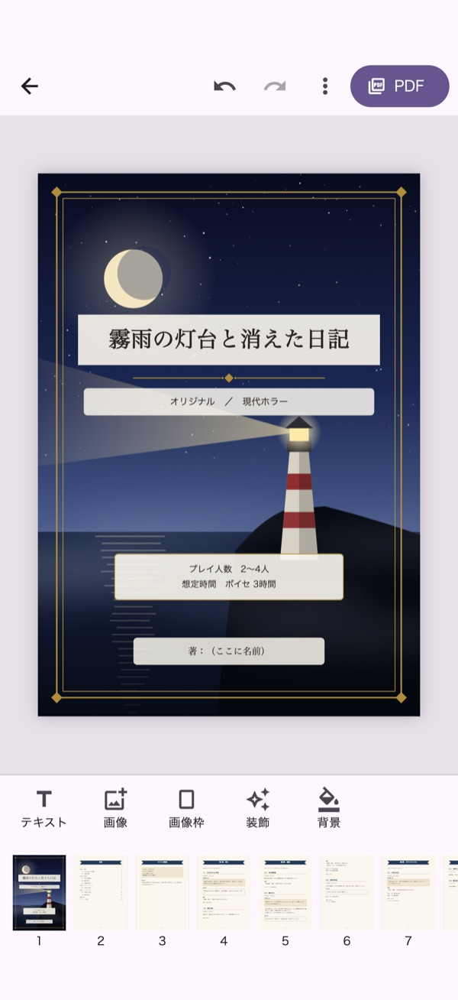
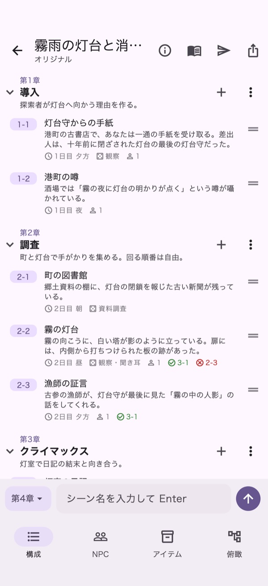
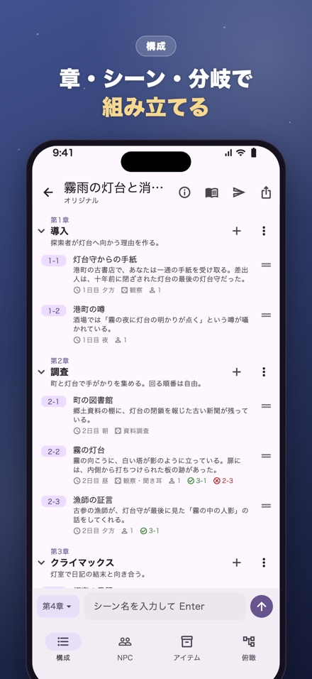
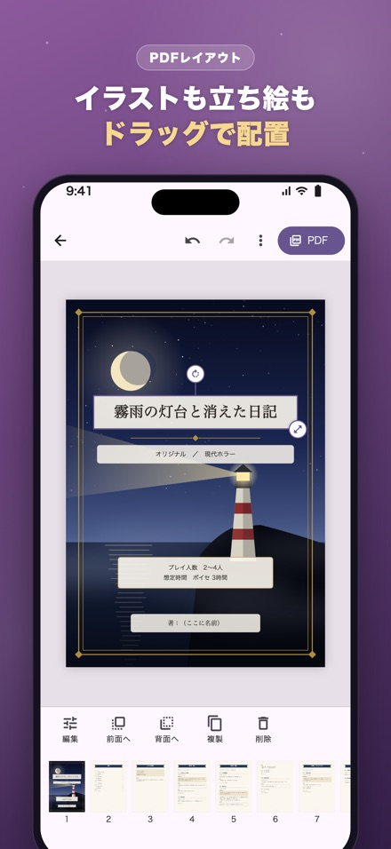
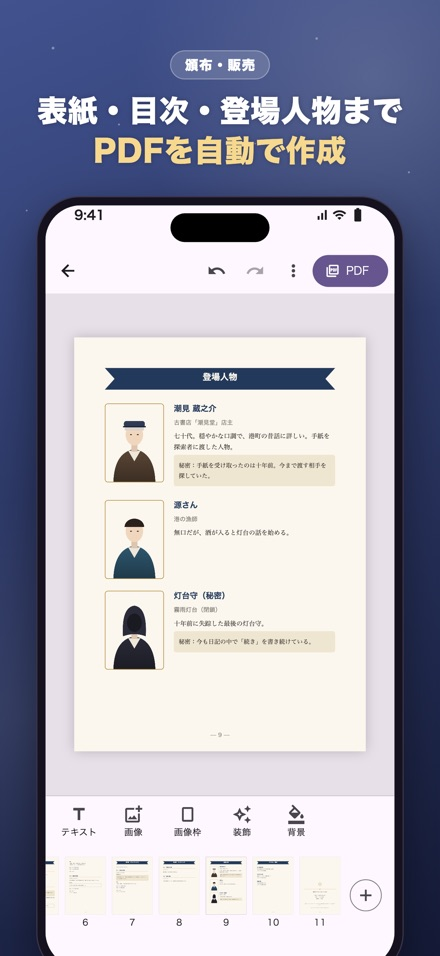
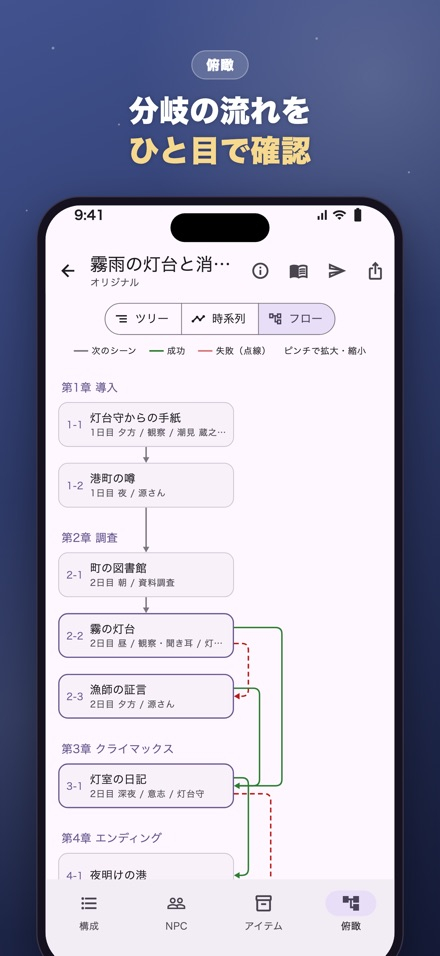
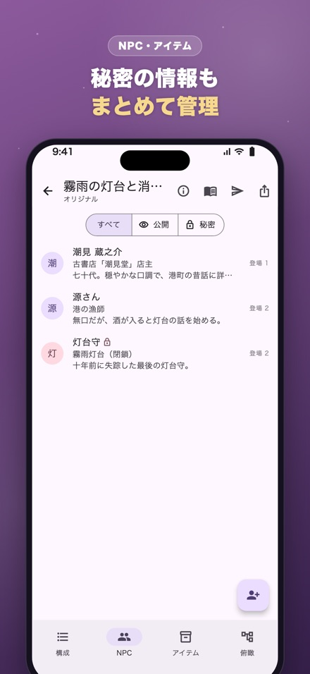

章・シーン・分岐で書ける
シーン名を打って Enter で次々追加。ドラッグで並び替え、読み上げ文・本文・KPメモを分けて書けます。自動保存。
KP・GMのためのシナリオ作成アプリ
章・シーン・分岐で組み立てるから、セッションで迷わないシナリオに。書き上げたら、頒布用のPDFも、投稿サイトやSNSに貼る文章も自動で作れます。


シーン名を打って Enter で次々追加。ドラッグで並び替え、読み上げ文・本文・KPメモを分けて書けます。自動保存。
判定の成功・失敗で進むシーンを設定。フローチャートと時系列で、シナリオ全体の流れを見渡せます。
NPCの秘密情報、アイテムの入手場所、どのシーンに誰が登場するかをまとめて管理。
表紙・目次・ハンドアウト・登場人物まで自動で組版。イラストや立ち絵はドラッグで配置。300dpiで書き出し。
小説投稿サイト用の本文（目次・分岐のページ移動リンク付き）、販売ページの説明文、SNSの告知文を自動で作成。
シナリオは端末の中だけに保存され、外部に送信されません。オフラインで書けて、バックアップで機種変更も安心。





すべての機能を無料でお使いいただけます。シナリオ一覧の画面に広告が表示されます（執筆中の画面には出ません）。設定（シナリオ一覧の右上の歯車）から「広告を削除」を購入すると、広告が表示されなくなります（買い切り・500円）。
お使いの端末の中だけに保存されます。運営者を含め、外部に送信されることはありません。
設定画面の「すべてのシナリオをバックアップ」で、シナリオ・PDFのレイアウト・画像を1つのファイルにまとめて保存できます。「ファイル」アプリやAirDropで新しい端末に移し、「バックアップから読み込む」で元に戻せます。アプリを削除するとシナリオも削除され、運営者側で復旧することはできないため、定期的なバックアップをおすすめします。
購入時と同じ Apple ID（Android の場合は Google アカウント）でストアにログインした状態で、設定画面の「購入を復元」を押してください。再度料金がかかることはありません。
いいえ。アプリから勝手に投稿されることはありません。シナリオの画面右上の「投稿する」で、投稿先に合わせた文章（タイトル・説明文・タグ・本文）を作り、コピーや共有でご自身の投稿画面に貼り付けて投稿します。
はい。作成物の販売・配布は自由です。使用する画像の権利や、各TRPGの権利者が定めるガイドライン、販売・投稿するサービスの規約をご確認ください（利用規約 第3条）。
お支払いは App Store / Google Play を通じて行われるため、返金は各ストアの手続きからお申し込みください（特定商取引法に基づく表記に案内があります）。
いいえ。本アプリは各TRPGの権利者とは関係のない非公式のツールです。各システム名は、それぞれの権利者の商標または登録商標です。シナリオを公開する際は、各権利者のガイドラインをご確認ください。
不具合のご報告・ご要望は、次のメールアドレスまでお送りください。